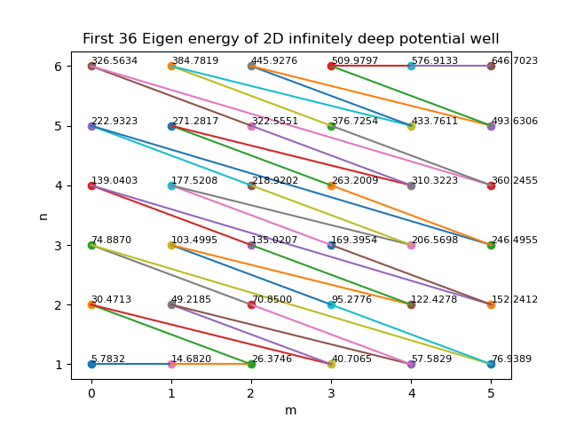
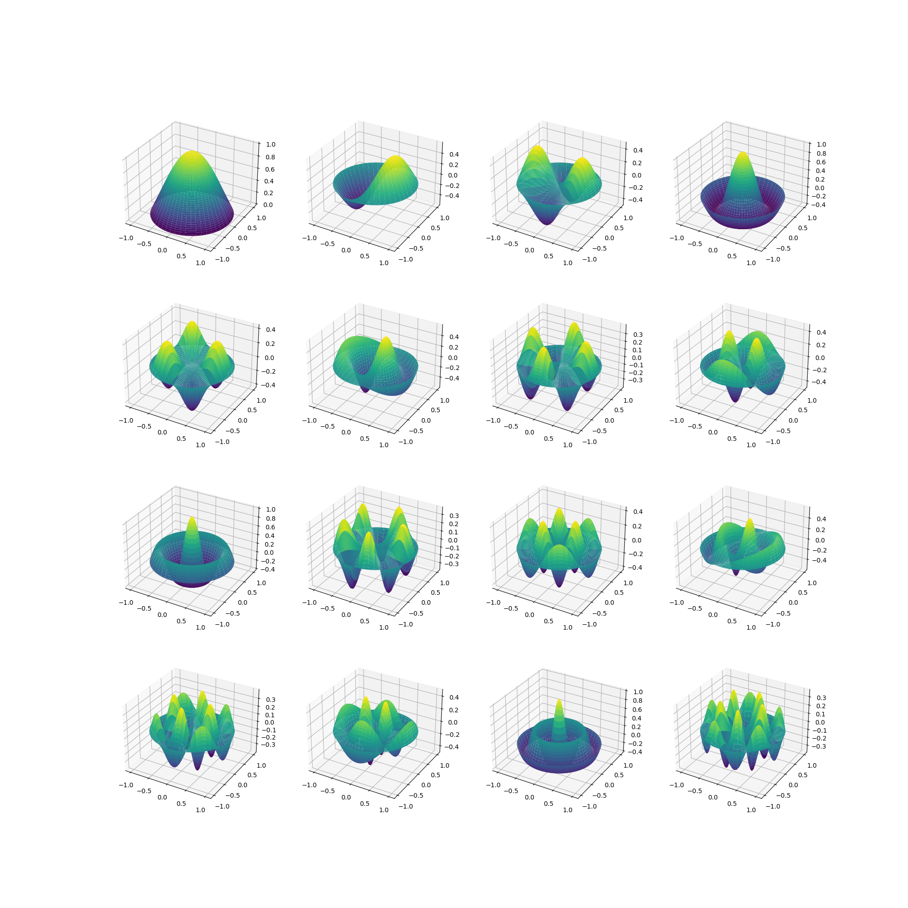
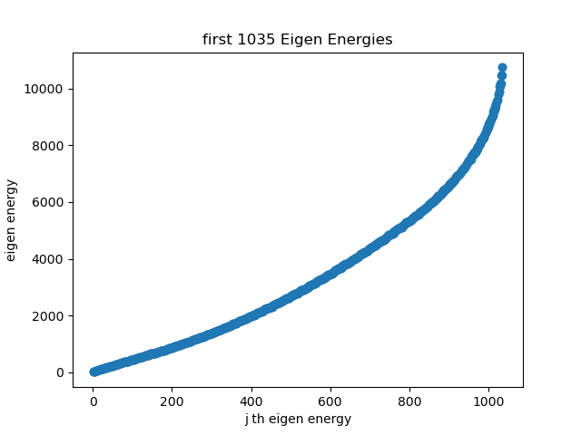
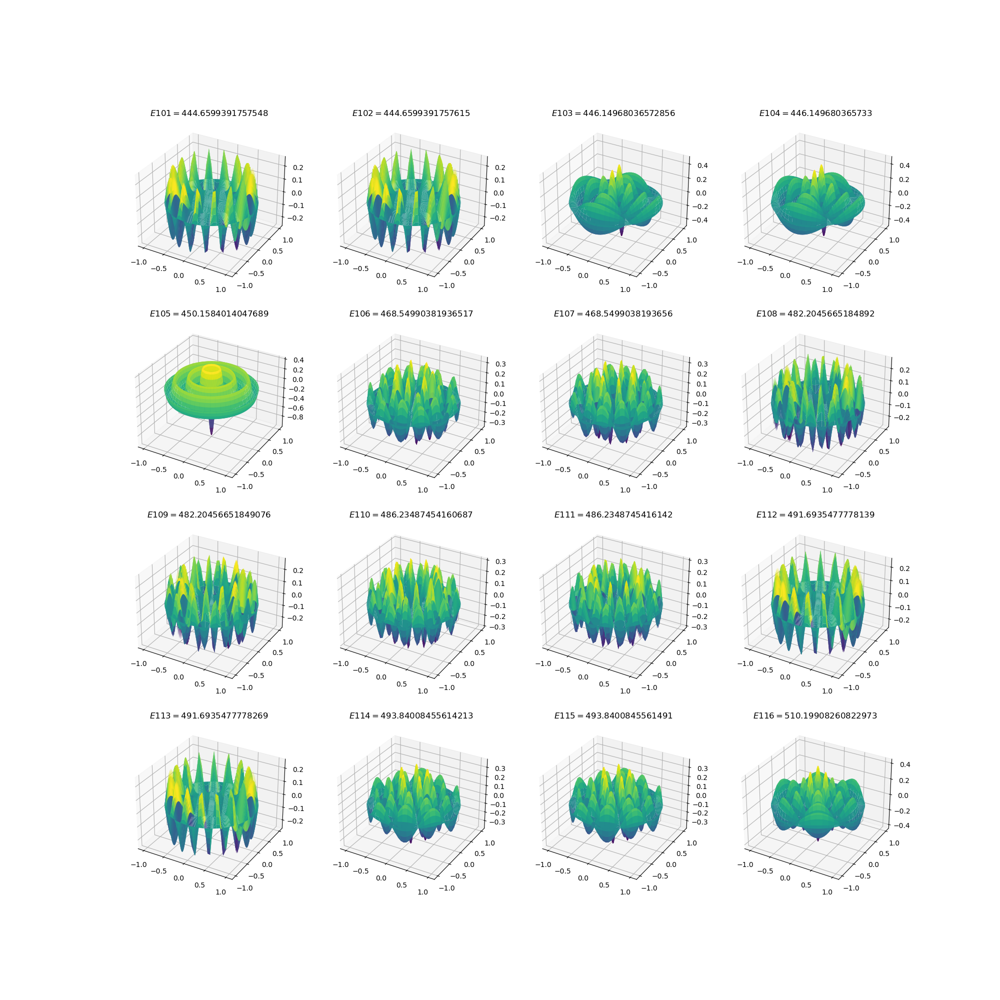
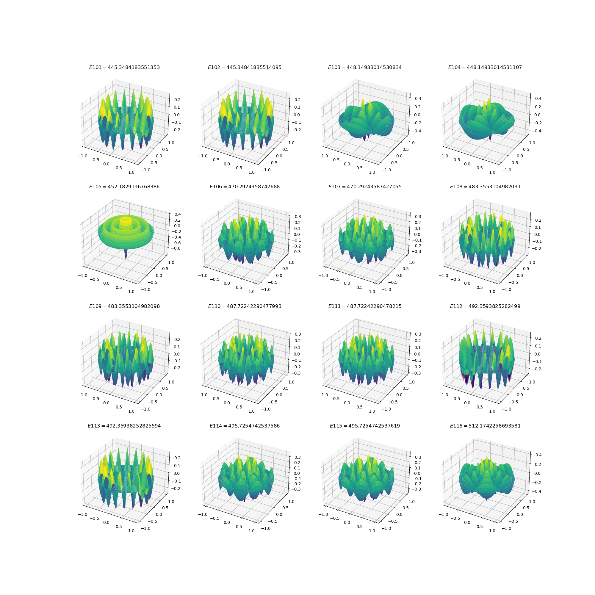
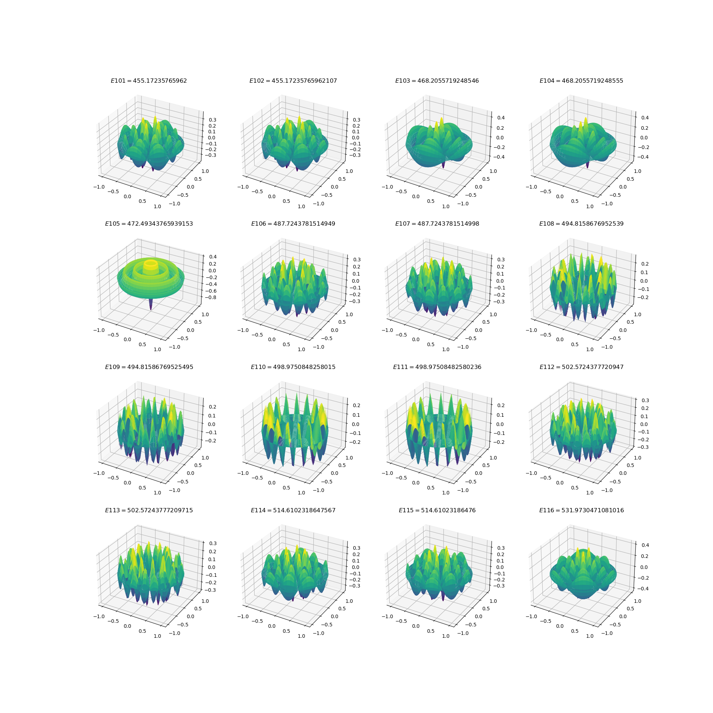

小课题3
问题描述
在半径 R = 1 R=1 R = 1
H ^ = − p ^ 2 2 m = − ℏ 2 2 m ∇ 2 \hat{H}
=-\frac{\hat{p}^2}{2m}
=-\frac{\hbar^2}{2m}\nabla^2 H ^ = − 2 m p ^ 2 = − 2 m ℏ 2 ∇ 2
取 ℏ = 2 m = 1 \hbar=2m=1 ℏ = 2 m = 1
H ^ = − ∇ 2 \hat{H}
=-\nabla^2 H ^ = − ∇ 2
圆外，势场无穷大，这导致势阱外波函数恒为零，这等价于边界条件：
ψ ∣ ∂ D = 0 , D = { ( r , θ ) ∣ 0 ⩽ r ⩽ 1 } \psi\big|_{\partial D}
=0,~~
D=\{(r,\theta)|0\leqslant r\leqslant 1 \} ψ ∂ D = 0 , D = {( r , θ ) ∣0 ⩽ r ⩽ 1 }
圆内，定态薛定谔方程 H ^ ψ = E ψ \hat{H}\psi=E\psi H ^ ψ = E ψ
− ∇ 2 ψ = E ψ -\nabla^2\psi
=E\psi − ∇ 2 ψ = E ψ
即：
∇ 2 ψ + E ψ = 0 \boxed{
\nabla^2\psi+E\psi
=0
} ∇ 2 ψ + E ψ = 0
小课题 3 需要解决下面三个问题：
1）求解这一本征问题 H ^ ψ = E ψ \hat{H}\psi=E\psi H ^ ψ = E ψ
2）按本征值从小到达排序，找基矢 { E n , φ n ( r , θ ) , n = 1 , 2 , ⋯ } \{E_n,~~\varphi_n(r,\theta),~~n=1,2,\cdots \} { E n , φ n ( r , θ ) , n = 1 , 2 , ⋯ }
3）增加势场 V = a φ 1 ( r , θ ) , a = 1 , 10 , 100 V=a\varphi_1(r,\theta),~~a=1,10,100 V = a φ 1 ( r , θ ) , a = 1 , 10 , 100
H ^ = − ∇ 2 + V \hat{H}
=-\nabla^2+V H ^ = − ∇ 2 + V
此时定态薛定谔方程及边界条件为：
[ − ∇ 2 + a φ 1 ( r , θ ) ] ψ = E ψ , ψ ∣ ∂ D = 0 \boxed{
\big[-\nabla^2+a\varphi_1(r,\theta)\big]\psi
=E\psi,~~\psi\big|_{\partial D}=0
} [ − ∇ 2 + a φ 1 ( r , θ ) ] ψ = E ψ , ψ ∂ D = 0
分别用谱方法和有限差分法求解本征值和本征函数，并进行对比。
问题1
1）求解这一本征问题 H ^ ψ = E ψ \hat{H}\psi=E\psi H ^ ψ = E ψ
为求解方程
∇ 2 ψ + E ψ = 0 \nabla^2\psi+E\psi
=0 ∇ 2 ψ + E ψ = 0
设 ψ ( r , θ ) = R ( r ) Θ ( θ ) \psi(r,\theta)=R(r)\Theta(\theta) ψ ( r , θ ) = R ( r ) Θ ( θ ) ∇ 2 = ∂ 2 ∂ r 2 + 1 r ∂ ∂ r + 1 r 2 ∂ 2 ∂ θ 2 \displaystyle{\nabla^2=\frac{\partial^2}{\partial r^2}+\frac{1}{r}\frac{\partial }{\partial r}+\frac{1}{r^2}\frac{\partial^2}{\partial \theta^2} } ∇ 2 = ∂ r 2 ∂ 2 + r 1 ∂ r ∂ + r 2 1 ∂ θ 2 ∂ 2
{ d 2 R ( r ) d r 2 + 1 r d R ( r ) d r + ( E − m 2 r 2 ) R ( r ) = 0 , R ( 1 ) = 0 , R ( 0 ) < ∞ d 2 Θ ( θ ) d θ 2 + m 2 Θ ( θ ) = 0 , Θ ( θ + 2 π ) = Θ ( θ ) \left\{
\begin{aligned}
&\frac{\mathrm{d}^2 R(r)}{\mathrm{d}r^2}+\frac{1}{r}\frac{\mathrm{d}R(r)}{\mathrm{d}r}+(E-\frac{m^2}{r^2})R(r)
=0,~~R(1)=0,~~R(0)<\infty \\
&\frac{\mathrm{d}^2\Theta(\theta)}{\mathrm{d}\theta^2}+m^2\Theta(\theta)
=0,~~\Theta(\theta+2\pi)=\Theta(\theta)
\end{aligned}
\right. ⎩ ⎨ ⎧ d r 2 d 2 R ( r ) + r 1 d r d R ( r ) + ( E − r 2 m 2 ) R ( r ) = 0 , R ( 1 ) = 0 , R ( 0 ) < ∞ d θ 2 d 2 Θ ( θ ) + m 2 Θ ( θ ) = 0 , Θ ( θ + 2 π ) = Θ ( θ )
第二个方程的解为：
Θ ( θ ) ∼ e ± i m φ \Theta(\theta)
\sim\mathrm{e}^{\pm \mathrm{i}m\varphi} Θ ( θ ) ∼ e ± i m φ
第一个方程是整数阶贝塞尔方程，其形式解为：
R ( m ) ( r ) = C m J m ( E r ) + C m N m ( E r ) R^{(m)}(r)
=C_m\mathrm{J}_m(\sqrt{E}r)+C_m\mathrm{N}_m(\sqrt{E}r) R ( m ) ( r ) = C m J m ( E r ) + C m N m ( E r )
结合边界条件 R ( 1 ) = 0 , R ( 0 ) < ∞ R(1)=0,~~R(0)<\infty R ( 1 ) = 0 , R ( 0 ) < ∞ E n ( m ) E_n^{(m)} E n ( m ) φ n ( m ) ( r , θ ) \varphi_n^{(m)}(r,\theta) φ n ( m ) ( r , θ )
E n ( m ) = [ x n ( m ) ] 2 E_n^{(m)}
=\big[x_n^{(m)}\big]^2 E n ( m ) = [ x n ( m ) ] 2
φ n ( m ) ( r , θ ) = J m ( x n ( m ) r ) [ c m cos ( m θ ) + d m sin ( m θ ) ] \varphi_n^{(m)}(r,\theta)
=\mathrm{J}_m(x_n^{(m)}r)[c_m\cos(m\theta)+d_m\sin(m\theta)] φ n ( m ) ( r , θ ) = J m ( x n ( m ) r ) [ c m cos ( m θ ) + d m sin ( m θ )]
其中，x n ( m ) x_n^{(m)} x n ( m ) m m m n n n
问题2
2）按本征值从小到达排序，找基矢 { E n , φ n ( r , θ ) , n = 1 , 2 , ⋯ } \{E_n,~~\varphi_n(r,\theta),~~n=1,2,\cdots \} { E n , φ n ( r , θ ) , n = 1 , 2 , ⋯ }
问题1给出
E n ( m ) = [ x n ( m ) ] 2 E_n^{(m)}
=\big[x_n^{(m)}\big]^2 E n ( m ) = [ x n ( m ) ] 2
φ n ( m ) ( r , θ ) = J m ( x n ( m ) r ) [ c m cos ( m θ ) + d m sin ( m θ ) ] \varphi_n^{(m)}(r,\theta)
=\mathrm{J}_m(x_n^{(m)}r)[c_m\cos(m\theta)+d_m\sin(m\theta)] φ n ( m ) ( r , θ ) = J m ( x n ( m ) r ) [ c m cos ( m θ ) + d m sin ( m θ )]
注意到，一个确定的本征值 E n ( m ) = [ x n ( m ) ] 2 E_n^{(m)}=\big[x_n^{(m)}\big]^2 E n ( m ) = [ x n ( m ) ] 2
J m ( x n ( m ) r ) cos ( m θ ) , J m ( x n ( m ) r ) sin ( m θ ) \mathrm{J}_m(x_n^{(m)}r)\cos(m\theta),~~
\mathrm{J}_m(x_n^{(m)}r)\sin(m\theta) J m ( x n ( m ) r ) cos ( m θ ) , J m ( x n ( m ) r ) sin ( m θ )
当 m = 0 m=0 m = 0
J m ( x n ( m ) r ) sin ( m θ ) = 0 \mathrm{J}_m(x_n^{(m)}r)\sin(m\theta)
=0 J m ( x n ( m ) r ) sin ( m θ ) = 0
当 m ≠ 0 m\ne 0 m = 0
J m ( x n ( m ) r ) sin ( m θ ) = − J m ( x n ( m ) r ) cos ( m θ + π 2 ) \mathrm{J}_m(x_n^{(m)}r)\sin(m\theta)
=-\mathrm{J}_m(x_n^{(m)}r)\cos(m\theta+\frac{\pi}{2}) J m ( x n ( m ) r ) sin ( m θ ) = − J m ( x n ( m ) r ) cos ( m θ + 2 π )
这就是说，此时正弦支可由余弦支绕 z z z π 2 \displaystyle{\frac{\pi}{2} } 2 π x y xy x y
为了画图方便，只考虑本征函数中的余弦支，即认为本征值和本征函数为：
{ E n ( m ) = [ x n ( m ) ] 2 φ n ( m ) ( r , θ ) = J m ( x n ( m ) r ) cos ( m θ ) \left\{
\begin{aligned}
&E_n^{(m)}
=\big[x_n^{(m)}\big]^2 \\
&\varphi_n^{(m)}(r,\theta)
=\mathrm{J}_m(x_n^{(m)}r)\cos(m\theta)
\end{aligned}
\right. { E n ( m ) = [ x n ( m ) ] 2 φ n ( m ) ( r , θ ) = J m ( x n ( m ) r ) cos ( m θ )
此时本征值和本征函数一一对应。将本征值从小到大排序，用指标 j j j
E 1 < E 2 < ⋯ < E j < ⋯ E_1<E_2<\cdots<E_j<\cdots E 1 < E 2 < ⋯ < E j < ⋯
本征函数也按此顺序排序，用指标 j j j
φ 1 < φ 2 < ⋯ < φ j < \varphi_1<\varphi_2<\cdots<\varphi_j< φ 1 < φ 2 < ⋯ < φ j <
本征值排序绘图如下：

图中选取了 0 ∼ 5 0\sim 5 0 ∼ 5 6 6 6 m = 0 , n = 1 m=0,n=1 m = 0 , n = 1 E 1 = [ x 1 ( 0 ) ] 2 E_1=\big[ x^{(0)}_1 \big]^2 E 1 = [ x 1 ( 0 ) ] 2 m = 0 , n = 1 m=0,n=1 m = 0 , n = 1 E 2 = [ x 1 ( 1 ) ] 2 E_2 = \big[ x^{(1)}_1 \big]^2 E 2 = [ x 1 ( 1 ) ] 2
按本征值升序顺序，画出前 16 16 16

需要注意的是，我们只选取了正交完备函数系中的余弦支 J m ( x n ( m ) r ) cos ( m θ ) \mathrm{J}_m(x_n^{(m)}r)\cos(m\theta) J m ( x n ( m ) r ) cos ( m θ ) m ≠ 0 m\ne 0 m = 0 J m ( x n ( m ) r ) sin ( m θ ) \mathrm{J}_m(x_n^{(m)}r)\sin(m\theta) J m ( x n ( m ) r ) sin ( m θ )
Python 代码如下：
from scipy.special import jn_zeros
from scipy.special import jn
import numpy as np
import matplotlib.pyplot as plt
from mpl_toolkits.mplot3d import Axes3D
n_zeros = 6
orders = 6
zeros = np.zeros((orders, n_zeros))
for i in range(0, orders):
zeros[i, :] = jn_zeros(i, n_zeros)
for i in range(0, orders):
for j in range(0, n_zeros):
plt.scatter(i, j+1)
plt.text(i, j+1, f'{zeros[i, j]**2:.4f}', fontsize=8, ha='left', va='bottom')
tmp_m = 0
tmp_n = 1
index = np.argsort(zeros.flatten())
plt.figure(1)
for k in range(1, (orders)*n_zeros):
i = index[k] // n_zeros
j = index[k] % n_zeros
m = i
n = j + 1
plt.plot([tmp_m, m], [tmp_n, n])
tmp_m = m
tmp_n = n
plt.title('First 36 Eigen energy of 2D infinitely deep potential well')
plt.xlabel('m')
plt.ylabel('n')
plt.xticks(np.arange(0, orders))
x = np.linspace(-1, 1, 100)
y = np.linspace(-1, 1, 100)
X, Y = np.meshgrid(x, y)
fig2 = plt.figure(figsize=(16, 16))
r = np.linspace(0, 1, 100)
theta = np.linspace(0, 2*np.pi, 100)
R, Theta = np.meshgrid(r, theta)
for k in range(0, 16):
i = index[k] // n_zeros
j = index[k] % n_zeros
m = i
n = j + 1
x_m_n = zeros[m, n]
Z = jn(m, zeros[i, j] * R) * np.cos(m * Theta)
X = R*np.cos(Theta)
Y = R*np.sin(Theta)
ax = fig2.add_subplot(4, 4, k+1, projection='3d')
ax.plot_surface(X, Y, Z, cmap='viridis')
tmp_m = m
tmp_n = n
plt.show()
问题3
3）增加势场 V = a φ 1 ( r , θ ) , a = 1 , 10 , 100 V=a\varphi_1(r,\theta),~~a=1,10,100 V = a φ 1 ( r , θ ) , a = 1 , 10 , 100
H ^ = − ∇ 2 + V \hat{H}
=-\nabla^2+V H ^ = − ∇ 2 + V
此时定态薛定谔方程及边界条件为：
[ − ∇ 2 + a φ 1 ( r , θ ) ] ψ = E ψ , ψ ∣ ∂ D = 0 \big[-\nabla^2+a\varphi_1(r,\theta)\big]\psi
=E\psi,~~\psi\big|_{\partial D}=0 [ − ∇ 2 + a φ 1 ( r , θ ) ] ψ = E ψ , ψ ∂ D = 0
分别用谱方法和有限差分法求解本征值和本征函数，并进行对比。
二维谱方法求解
谱方法原理
注意到，φ 1 \varphi_1 φ 1
φ 1 = φ 1 ( r ) = 1 ∫ 0 1 J 0 2 ( x 1 ( 0 ) r ) r d r ⋅ J 0 ( x 1 ( 0 ) r ) \varphi_1
=\varphi_1(r)
=\frac{1}{\sqrt{\int_{0}^{1} \mathrm{J}_0^2(x^{(0)}_1 r)r\mathrm{d}r}}\cdot \mathrm{J}_0(x^{(0)}_1 r) φ 1 = φ 1 ( r ) = ∫ 0 1 J 0 2 ( x 1 ( 0 ) r ) r d r 1 ⋅ J 0 ( x 1 ( 0 ) r )
由问题 1、2 的回答可知，函数基：
{ φ m n l ( r , θ ) = J m ( x n ( m ) r ) sin ( m θ + π 2 l ) , m = 0 , 1 , 2 , ⋯ , n = 1 , 2 , ⋯ , l = 0 , 1 } \bigg\{\varphi_{mnl}(r,\theta)=\mathrm{J}_m(x^{(m)}_n r)\sin(m\theta+\frac{\pi}{2}l),~~m=0,1,2,\cdots,~~n=1,2,\cdots,~~l=0,1 \bigg\} { φ mn l ( r , θ ) = J m ( x n ( m ) r ) sin ( m θ + 2 π l ) , m = 0 , 1 , 2 , ⋯ , n = 1 , 2 , ⋯ , l = 0 , 1 }
是正交完备的（并不归一）。
实际上，对于 m = 0 , l = 0 m=0,l=0 m = 0 , l = 0 m = 0 m=0 m = 0
设有某种对应关系，使得：
( m , n , l ) ⟷ j (m, n,l)
\longleftrightarrow j ( m , n , l ) ⟷ j
E m n l ⟷ E j E_{mnl}
\longleftrightarrow E_j E mn l ⟷ E j
φ m n l ⟷ φ j \varphi_{mnl}
\longleftrightarrow \varphi_j φ mn l ⟷ φ j
这种对应关系不一定是“本征值升序排序”
其中，φ j \varphi_j φ j
∇ 2 φ j = − E j φ j \nabla^2\varphi_j
=-E_j \varphi_j ∇ 2 φ j = − E j φ j
由于 { φ j , j = 1 , 2 , ⋯ , ∞ } \{\varphi_j,~~j=1,2,\cdots,\infty\} { φ j , j = 1 , 2 , ⋯ , ∞ } ψ \psi ψ ψ \psi ψ
ψ = ∑ j = 1 ∞ c j φ j \psi
=\sum_{j=1}^{\infty} c_j\varphi_j ψ = j = 1 ∑ ∞ c j φ j
结合上面两式，方程 [ − ∇ 2 + a φ 1 ( r ) ] ψ = E ψ \big[-\nabla^2+a\varphi_1(r)\big]\psi=E\psi [ − ∇ 2 + a φ 1 ( r ) ] ψ = E ψ
[ − ∇ 2 + a φ 1 ( r ) ] ∑ j = 1 ∞ c j φ j = E ∑ j = 1 ∞ c j φ j \big[-\nabla^2+a\varphi_1(r)\big]\sum_{j=1}^{\infty} c_j\varphi_j
=E\sum_{j=1}^{\infty} c_j\varphi_j [ − ∇ 2 + a φ 1 ( r ) ] j = 1 ∑ ∞ c j φ j = E j = 1 ∑ ∞ c j φ j
即：
∑ j = 1 ∞ c j [ E j φ j + a φ 1 ( r ) φ j ] = E ∑ j = 1 ∞ c j φ j \sum_{j=1}^{\infty} c_j\bigg[ E_j\varphi_j+a\varphi_1(r)\varphi_j \bigg]
=E\sum_{j=1}^{\infty} c_j\varphi_j j = 1 ∑ ∞ c j [ E j φ j + a φ 1 ( r ) φ j ] = E j = 1 ∑ ∞ c j φ j
等式两边同乘 r φ j ′ r\varphi_{j'} r φ j ′ r , θ r,\theta r , θ
左边 = ∫ r = 0 r = 1 ∫ θ = 0 θ = 2 π r φ j ′ { ∑ j = 1 ∞ c j [ E j φ j + a φ 1 ( r ) φ j ] } d r d θ = ∑ j = 1 ∞ c j E j N j δ j ′ j + a ∑ j = 1 ∞ c j ∫ r = 0 r = 1 ∫ θ = 0 θ = 2 π φ 1 ( r ) φ j ′ ( r , θ ) φ j ( r , θ ) ⋅ r d r d θ = c j ′ E j ′ N j ′ + a ∑ j = 1 ∞ c j M j ′ j , 其中 , N j = ∫ r = 0 r = 1 ∫ θ = 0 θ = 2 π φ j 2 r d r d θ , M j ′ j = ∫ r = 0 r = 1 ∫ θ = 0 θ = 2 π φ 1 ( r ) φ j ′ ( r , θ ) φ j ( r , θ ) ⋅ r d r d θ \begin{aligned}
左边
&=\int_{r=0}^{r=1}\int_{\theta=0}^{\theta=2\pi}r\varphi_{j'} \bigg\{ \sum_{j=1}^{\infty} c_j\bigg[ E_j\varphi_j+a\varphi_1(r)\varphi_j \bigg] \bigg\} \mathrm{d}r\mathrm{d}\theta \\
&=\sum_{j=1}^{\infty} c_{j} E_{j} N_{j}\delta_{j'j}+a\sum_{j=1}^{\infty} c_j \int_{r=0}^{r=1}\int_{\theta=0}^{\theta=2\pi} \varphi_1(r)\varphi_{j'}(r,\theta)\varphi_{j}(r,\theta)\cdot r\mathrm{d}r\mathrm{d}\theta \\
&=c_{j'}E_{j'} N_{j'} +a\sum_{j=1}^{\infty} c_j M_{j'j},~~其中,~~N_j=\int_{r=0}^{r=1}\int_{\theta=0}^{\theta=2\pi} \varphi_j^2 r \mathrm{d}r\mathrm{d}\theta,~~ M_{j' j} = \int_{r=0}^{r=1}\int_{\theta=0}^{\theta=2\pi} \varphi_1(r)\varphi_{j'}(r,\theta)\varphi_{j}(r,\theta)\cdot r\mathrm{d}r\mathrm{d}\theta
\end{aligned} 左边 = ∫ r = 0 r = 1 ∫ θ = 0 θ = 2 π r φ j ′ { j = 1 ∑ ∞ c j [ E j φ j + a φ 1 ( r ) φ j ] } d r d θ = j = 1 ∑ ∞ c j E j N j δ j ′ j + a j = 1 ∑ ∞ c j ∫ r = 0 r = 1 ∫ θ = 0 θ = 2 π φ 1 ( r ) φ j ′ ( r , θ ) φ j ( r , θ ) ⋅ r d r d θ = c j ′ E j ′ N j ′ + a j = 1 ∑ ∞ c j M j ′ j , 其中 , N j = ∫ r = 0 r = 1 ∫ θ = 0 θ = 2 π φ j 2 r d r d θ , M j ′ j = ∫ r = 0 r = 1 ∫ θ = 0 θ = 2 π φ 1 ( r ) φ j ′ ( r , θ ) φ j ( r , θ ) ⋅ r d r d θ
右边 = ∫ r = 0 r = 1 ∫ θ = 0 θ = 2 π r φ j ′ [ E ∑ j = 1 ∞ c j φ j ] d r d θ = E ∑ j = 1 ∞ c j [ ∫ r = 0 r = 1 ∫ θ = 0 θ = 2 π φ j ′ φ j r d r d θ ] = E ∑ j = 1 ∞ c j N j δ j ′ j , 其中 , N j = ∫ r = 0 r = 1 ∫ θ = 0 θ = 2 π φ j 2 r d r d θ = E c j ′ N j ′ \begin{aligned}
右边
&=\int_{r=0}^{r=1}\int_{\theta=0}^{\theta=2\pi}r\varphi_{j'}\bigg[ E\sum_{j=1}^{\infty} c_j\varphi_j \bigg] \mathrm{d}r\mathrm{d}\theta \\
&=E\sum_{j=1}^{\infty} c_j\bigg[ \int_{r=0}^{r=1}\int_{\theta=0}^{\theta=2\pi} \varphi_{j'}\varphi_j r \mathrm{d}r\mathrm{d}\theta \bigg] \\
&=E\sum_{j=1}^{\infty} c_j N_{j} \delta_{j'j},~~其中,~~N_j=\int_{r=0}^{r=1}\int_{\theta=0}^{\theta=2\pi} \varphi_j^2 r \mathrm{d}r\mathrm{d}\theta \\
&=Ec_{j'} N_{j'}
\end{aligned} 右边 = ∫ r = 0 r = 1 ∫ θ = 0 θ = 2 π r φ j ′ [ E j = 1 ∑ ∞ c j φ j ] d r d θ = E j = 1 ∑ ∞ c j [ ∫ r = 0 r = 1 ∫ θ = 0 θ = 2 π φ j ′ φ j r d r d θ ] = E j = 1 ∑ ∞ c j N j δ j ′ j , 其中 , N j = ∫ r = 0 r = 1 ∫ θ = 0 θ = 2 π φ j 2 r d r d θ = E c j ′ N j ′
于是，方程化为：
c j ′ E j ′ N j ′ + a ∑ j = 1 ∞ c j M j ′ j = E c j ′ N j ′ c_{j'} E_{j'} N_{j'} + a\sum_{j=1}^{\infty} c_{j} M_{j' j}
=E c_{j'} N_{j'} c j ′ E j ′ N j ′ + a j = 1 ∑ ∞ c j M j ′ j = E c j ′ N j ′
即：
E j ′ c j ′ + a ∑ j = 1 ∞ c j M j ′ j N j ′ = E c j ′ E_{j'}c_{j'} + a\sum_{j=1}^{\infty} c_{j}\frac{ M_{j' j} }{N_{j'}}
=E c_{j'} E j ′ c j ′ + a j = 1 ∑ ∞ c j N j ′ M j ′ j = E c j ′
令 M ~ j ′ j = M j ′ j N j ′ \displaystyle{\tilde{M}_{j'j}=\frac{ M_{j' j} }{N_{j'}} } M ~ j ′ j = N j ′ M j ′ j
E j ′ c j ′ + a ∑ j = 1 ∞ c j M ~ j ′ j = E c j ′ E_{j'}c_{j'} + a\sum_{j=1}^{\infty} c_{j}\tilde{M}_{j' j}
=E c_{j'} E j ′ c j ′ + a j = 1 ∑ ∞ c j M ~ j ′ j = E c j ′
这等价于矩阵方程：
( E ~ + a M ~ ) C = E C \boxed{
(\bold{\tilde{E}}+a\bold{\tilde{M}})\bold{C}
=E\bold{C}
} ( E ~ + a M ~ ) C = E C
其中，
E ~ = [ E 1 E 2 ⋱ E j ′ ⋱ ] , C = [ c 1 c 2 ⋮ c j ′ ⋮ ] \bold{\tilde{E}}
=\begin{bmatrix}
E_1 \\
& E_2 \\
& &\ddots \\
& & &E_{j'} \\
& & & &\ddots
\end{bmatrix},~~
\bold{C}
=\begin{bmatrix}
c_1 \\
c_2 \\
\vdots \\
c_{j'} \\
\vdots
\end{bmatrix} E ~ = E 1 E 2 ⋱ E j ′ ⋱ , C = c 1 c 2 ⋮ c j ′ ⋮
M ~ j ′ j \tilde{M}_{j'j} M ~ j ′ j M ~ \bold{\tilde{M}} M ~ j ′ j' j ′ j j j
M ~ j ′ j = M j ′ j N j ′ = ∫ r = 0 r = 1 ∫ θ = 0 θ = 2 π φ 1 ( r ) φ j ′ ( r , θ ) φ j ( r , θ ) ⋅ r d r d θ ∫ r = 0 r = 1 ∫ θ = 0 θ = 2 π φ j ′ 2 r d r d θ = ∫ θ = 0 θ = 2 π sin ( m ′ θ + π 2 l ′ ) sin ( m θ + π 2 l ) d θ ∫ r = 1 r = 1 φ 1 ( r ) J m ′ ( x n ′ ( m ′ ) r ) J m ( x n ( m ) r ) r d r ∫ θ = 0 θ = 2 π sin 2 ( m ′ θ + π 2 l ′ ) d θ ∫ r = 0 r = 1 J m ′ 2 ( x n ′ m ′ r ) r d r = π δ m ′ m δ l ′ l ∫ r = 1 r = 1 φ 1 ( r ) J m ′ ( x n ′ ( m ′ ) r ) J m ( x n ( m ) r ) r d r π ∫ r = 0 r = 1 J m ′ 2 ( x n ′ m ′ r ) r d r = δ m ′ m δ l ′ l ∫ r = 0 r = 1 φ 1 ( r ) J m ′ ( x n ′ ( m ′ ) r ) J m ( x n ( m ) r ) r d r ∫ r = 0 r = 1 J m ′ 2 ( x n ′ ( m ′ ) r ) r d r \begin{aligned}
\tilde{M}_{j'j}
&=\frac{ M_{j' j} }{N_{j'}} \\
&=\frac{\int_{r=0}^{r=1}\int_{\theta=0}^{\theta=2\pi} \varphi_1(r)\varphi_{j'}(r,\theta)\varphi_{j}(r,\theta)\cdot r\mathrm{d}r\mathrm{d}\theta}{\int_{r=0}^{r=1}\int_{\theta=0}^{\theta=2\pi} \varphi_{j'}^2 r \mathrm{d}r\mathrm{d}\theta} \\
&=\frac{\int_{\theta=0}^{\theta=2\pi}\sin(m'\theta+\frac{\pi}{2}l')\sin(m\theta+\frac{\pi}{2}l)\mathrm{d}\theta\int_{r=1}^{r=1}\varphi_1(r) \mathrm{J}_{m'}(x^{(m')}_{n'}r)\mathrm{J}_m(x^{(m)}_n r)r\mathrm{d}r }{\int_{\theta=0}^{\theta=2\pi} \sin^2(m'\theta+\frac{\pi}{2}l')\mathrm{d}\theta \int_{r=0}^{r=1} \mathrm{J}^2_{m'}(x^{m'}_{n'} r)r\mathrm{d}r} \\
&=\frac{\pi\delta_{m' m}\delta_{l'l}\int_{r=1}^{r=1}\varphi_1(r) \mathrm{J}_{m'}(x^{(m')}_{n'}r)\mathrm{J}_m(x^{(m)}_n r)r\mathrm{d}r}{\pi\int_{r=0}^{r=1} \mathrm{J}^2_{m'}(x^{m'}_{n'} r)r\mathrm{d}r} \\
&=\frac{\delta_{m' m}\delta_{l'l}\int_{r=0}^{r=1}\varphi_1(r) \mathrm{J}_{m'}(x^{(m')}_{n'}r)\mathrm{J}_m(x^{(m)}_n r)r\mathrm{d}r}{\int_{r=0}^{r=1} \mathrm{J}^2_{m'}(x^{(m')}_{n'} r)r\mathrm{d}r} \\
\end{aligned} M ~ j ′ j = N j ′ M j ′ j = ∫ r = 0 r = 1 ∫ θ = 0 θ = 2 π φ j ′ 2 r d r d θ ∫ r = 0 r = 1 ∫ θ = 0 θ = 2 π φ 1 ( r ) φ j ′ ( r , θ ) φ j ( r , θ ) ⋅ r d r d θ = ∫ θ = 0 θ = 2 π sin 2 ( m ′ θ + 2 π l ′ ) d θ ∫ r = 0 r = 1 J m ′ 2 ( x n ′ m ′ r ) r d r ∫ θ = 0 θ = 2 π sin ( m ′ θ + 2 π l ′ ) sin ( m θ + 2 π l ) d θ ∫ r = 1 r = 1 φ 1 ( r ) J m ′ ( x n ′ ( m ′ ) r ) J m ( x n ( m ) r ) r d r = π ∫ r = 0 r = 1 J m ′ 2 ( x n ′ m ′ r ) r d r π δ m ′ m δ l ′ l ∫ r = 1 r = 1 φ 1 ( r ) J m ′ ( x n ′ ( m ′ ) r ) J m ( x n ( m ) r ) r d r = ∫ r = 0 r = 1 J m ′ 2 ( x n ′ ( m ′ ) r ) r d r δ m ′ m δ l ′ l ∫ r = 0 r = 1 φ 1 ( r ) J m ′ ( x n ′ ( m ′ ) r ) J m ( x n ( m ) r ) r d r
方程
( E ~ + a M ~ ) C = E C \boxed{
(\bold{\tilde{E}}+a\bold{\tilde{M}})\bold{C}
=E\bold{C}
} ( E ~ + a M ~ ) C = E C
是个特征方程，解出这个特征方程就可以得到有微扰情况下能量本征值 E α E_\alpha E α ψ α \psi_\alpha ψ α
设第 α \alpha α
C α = [ C α 1 C α 2 ⋮ C α i ⋮ ] \bold{C}_{\alpha}
=\begin{bmatrix}
C_{\alpha 1} \\
C_{\alpha 2} \\
\vdots \\
C_{\alpha i} \\
\vdots
\end{bmatrix} C α = C α 1 C α 2 ⋮ C α i ⋮
则对应的本征函数为：
ψ α = ∑ i = 1 ∞ C α i φ i \psi_\alpha
=\sum_{i=1}^{\infty} C_{\alpha i} \varphi_i ψ α = i = 1 ∑ ∞ C α i φ i
数值求解
a = 1 a=1 a = 1
1 ∼ 16 1\sim 16 1 ∼ 16
前 1035 1035 1035

1 ∼ 16 1\sim 16 1 ∼ 16
101 ∼ 116 101\sim 116 101 ∼ 116

a = 10 a=10 a = 10
1 ∼ 16 1\sim 16 1 ∼ 16
前 1035 1035 1035
1 ∼ 16 1\sim 16 1 ∼ 16
101 ∼ 116 101\sim 116 101 ∼ 116

a = 100 a=100 a = 100
1 ∼ 16 1\sim 16 1 ∼ 16
前 1035 1035 1035
1 ∼ 16 1\sim 16 1 ∼ 16
101 ∼ 116 101\sim 116 101 ∼ 116

Python 代码如下：
from scipy.special import jn_zeros
from scipy.special import jn
import numpy as np
from scipy.integrate import quad
from scipy.integrate import dblquad
import matplotlib.pyplot as plt
from joblib import Parallel, delayed
from mpl_toolkits.mplot3d import Axes3D
a = 1
m_num = 23
n_num = 23
zeros = np.zeros((m_num, n_num+1))
# zeros[i, j] 给出 i 阶 Bessel 函数的第 j 个正零点；可以给出 0 - m_num-1 阶贝塞尔函数，1 - n_num 个正零点
for i in range(m_num):
zeros[i, 1:] = jn_zeros(i, n_num)
# print(zeros)
[integral_1, err ] = 1 / np.sqrt( quad( lambda r: r * jn(0, zeros[0, 1] * r )**2, 0, 1 ) )
# print(integral_1)
def phi_1(r):
result = 1 / integral_1 * jn(0, zeros[0, 1] * r)
return result
j_to_mnl = []
j_num = (2*m_num-1)*n_num
tilde_E = np.zeros((j_num,j_num))
cnt = -1
# 余弦函数支
for n in range(1, n_num+1):
for m in range(0, m_num):
cnt += 1
j_to_mnl.append([m, n])
tilde_E[cnt, cnt] = zeros[m, n]**2
# 正弦函数支
for n in range(1, n_num+1):
for m in range(1, m_num):
cnt += 1
j_to_mnl.append([m, n])
tilde_E[cnt, cnt] = zeros[m, n] ** 2
#print(j_to_mnl)
#print(tilde_E)
integral_2 = np.zeros(j_num)
for j in range(j_num):
m = j_to_mnl[j][0]
n = j_to_mnl[j][1]
[result, err] = quad(lambda r: r * jn(m, zeros[m, n] * r)** 2 , 0, 1)
integral_2[j] = result
tilde_M = np.zeros((j_num, j_num))
for i in range(0, j_num):
for j in range(0, j_num):
i_m = j_to_mnl[i][0]
i_n = j_to_mnl[i][1]
j_m = j_to_mnl[j][0]
j_n = j_to_mnl[j][1]
if i < n_num*m_num:
i_l = 1
else:
i_l = 0
if j < n_num*m_num:
j_l = 1
else:
j_l = 0
if i_m == j_m and i_l == j_l:
[up, err] = quad( lambda r: phi_1(r) * jn(i_m, zeros[i_m, i_n]*r) * jn(j_m, zeros[j_m, j_n]*r)* r, 0, 1)
down = integral_2[i]
tilde_M[i, j] = up/down
print(i, j)
print(tilde_E)
print(tilde_M)
print(tilde_E+a*tilde_M)
[values, vectors] = (np.linalg.eig(tilde_E + a*tilde_M))
sorted_indices = np.argsort(values)
values = values[sorted_indices]
vectors = vectors[:, sorted_indices]
#print(values)
#print(vectors)
r = np.linspace(0, 1, 100)
theta = np.linspace(0, 2 * np.pi, 100)
R, Theta = np.meshgrid(r, theta)
plt.figure(figsize=(11, 6))
x = range(1, 17)
plt.scatter(x, values[:16])
plt.xlabel('j th eigen energy')
plt.ylabel('eigen energy')
plt.title('first 16 Eigen Energies')
plt.grid(True)
for i, txt in enumerate(values[:16]):
plt.text(x[i], values[i]+1, f'{txt:.3f}', ha='center', va='bottom')
plt.show()
plt.figure()
x = range(1, j_num+1)
plt.scatter(x, values)
plt.xlabel('j th eigen energy')
plt.ylabel('eigen energy')
plt.title('first 1035 Eigen Energies')
plt.show()
r = np.linspace(0, 1, 100)
theta = np.linspace(0, 2 * np.pi, 100)
R, Theta = np.meshgrid(r, theta)
X = R*np.cos(Theta)
Y = R*np.sin(Theta)
def varphi(m, n, l, r, theta):
return jn(m, zeros[m, n]*r) * np.sin(m*theta+np.pi/2*l)
for b in [0, 100]:
fig2 = plt.figure(figsize=(20, 20))
for k in range(1, 17):
Z = np.zeros_like(R)
for i in range(0, j_num):
m = j_to_mnl[i][0]
n = j_to_mnl[i][1]
if i <j_num:
l = 1
else:
l = 0
Z += vectors[i, k+b-1] * varphi(m, n, l, R, Theta)
ax = fig2.add_subplot(4, 4, k, projection='3d')
ax.plot_surface(X, Y, Z, cmap='viridis')
ax.set_title(f'$E{k+b}={values[k+b-1]}$ ')
plt.show()
有限差分法求解
差分原理
注意到，φ 1 \varphi_1 φ 1
φ 1 = φ 1 ( r ) = 1 ∫ 0 1 J 0 2 ( x 1 ( 0 ) r ) r d r ⋅ J 0 ( x 1 ( 0 ) r ) \varphi_1
=\varphi_1(r)
=\frac{1}{\sqrt{\int_{0}^{1} \mathrm{J}_0^2(x^{(0)}_1 r)r\mathrm{d}r}}\cdot \mathrm{J}_0(x^{(0)}_1 r) φ 1 = φ 1 ( r ) = ∫ 0 1 J 0 2 ( x 1 ( 0 ) r ) r d r 1 ⋅ J 0 ( x 1 ( 0 ) r )
对于方程：
[ − ∇ 2 + a φ 1 ( r ) ] ψ = E ψ , ψ ∣ ∂ D = 0 \big[-\nabla^2+a\varphi_1(r)\big]\psi
=E\psi,~~\psi\big|_{\partial D}=0 [ − ∇ 2 + a φ 1 ( r ) ] ψ = E ψ , ψ ∂ D = 0
作坐标变换：
{ r = x 2 + y 2 θ = arctan y x \left\{
\begin{aligned}
&r=\sqrt{x^2+y^2} \\
&\theta=\arctan\frac{y}{x}
\end{aligned}
\right. ⎩ ⎨ ⎧ r = x 2 + y 2 θ = arctan x y
令：
f ( x , y ) = φ 1 ( x 2 + y 2 ) f(x,y)
=\varphi_1(\sqrt{x^2+y^2}) f ( x , y ) = φ 1 ( x 2 + y 2 )
方程化为：
[ − ∇ 2 + a f ( x , y ) ] ψ = E ψ , ψ ∣ ∂ D = 0 \big[-\nabla^2+af(x,y)\big]\psi
=E\psi,~~\psi\big|_{\partial D}=0 [ − ∇ 2 + a f ( x , y ) ] ψ = E ψ , ψ ∂ D = 0
将区域 { ( x , y ) ∣ x ∈ [ − 1 , 1 ] , y ∈ [ − 1 , 1 ] } \{(x,y)|x\in[-1,1],y\in[-1,1] \} {( x , y ) ∣ x ∈ [ − 1 , 1 ] , y ∈ [ − 1 , 1 ]} Δ x = Δ y = h = 2 / ( N − 1 ) \Delta x=\Delta y=h=2/(N-1) Δ x = Δ y = h = 2/ ( N − 1 ) N N N x x x y y y
任一格点的坐标 ( x i , y j ) (x_i,y_j) ( x i , y j ) i , j i,j i , j
x i = − 1 + ( i − 1 ) h , y j = − 1 + ( j − 1 ) h , i , j ∈ [ 1 , N ] , i , j ∈ Z x_i
=-1+(i-1)h,~~
y_j
=-1+(j-1)h,~~i,j\in[1,N],~~i,j\in \Z x i = − 1 + ( i − 1 ) h , y j = − 1 + ( j − 1 ) h , i , j ∈ [ 1 , N ] , i , j ∈ Z
则：
∇ 2 ψ ∣ i , j = ∂ 2 ψ ∂ x 2 ∣ i , j + ∂ 2 ψ ∂ y 2 ∣ i , j ≈ ψ ∣ i + 1 , j − ψ ∣ i , j h − ψ ∣ i , j − ψ ∣ i − 1 , j h h + ψ ∣ i , j + 1 − ψ ∣ i , j h − ψ ∣ i , j − ψ ∣ i , j − 1 h h = 1 h 2 ( − 4 ψ ∣ i , j + ψ ∣ i + 1 , j + ψ ∣ i − 1 , j + ψ ∣ i , j + 1 + ψ ∣ i , j − 1 ) \begin{aligned}
\nabla^2 \psi\big|_{i,j}
&=\frac{\partial^2 \psi}{\partial x^2}\bigg|_{i,j}+\frac{\partial^2 \psi}{\partial y^2}\bigg|_{i,j} \\
&\approx \cfrac{\cfrac{\psi|_{i+1,j}-\psi|_{i,j}}{h}-\cfrac{\psi|_{i,j}-\psi|_{i-1,j}}{h}}{h} + \cfrac{\cfrac{\psi|_{i,j+1}-\psi|_{i,j}}{h}-\cfrac{\psi|_{i,j}-\psi|_{i,j-1}}{h}}{h} \\
&=\frac{1}{h^2}(-4\psi|_{i,j}+\psi|_{i+1,j}+\psi|_{i-1,j}+\psi|_{i,j+1}+\psi|_{i,j-1})
\end{aligned} ∇ 2 ψ i , j = ∂ x 2 ∂ 2 ψ i , j + ∂ y 2 ∂ 2 ψ i , j ≈ h h ψ ∣ i + 1 , j − ψ ∣ i , j − h ψ ∣ i , j − ψ ∣ i − 1 , j + h h ψ ∣ i , j + 1 − ψ ∣ i , j − h ψ ∣ i , j − ψ ∣ i , j − 1 = h 2 1 ( − 4 ψ ∣ i , j + ψ ∣ i + 1 , j + ψ ∣ i − 1 , j + ψ ∣ i , j + 1 + ψ ∣ i , j − 1 )
于是，方程 [ − ∇ 2 + a f ( x , y ) ] ψ = E ψ , ψ ∣ ∂ D = 0 \big[-\nabla^2+af(x,y)\big]\psi=E\psi,~~\psi\big|_{\partial D}=0 [ − ∇ 2 + a f ( x , y ) ] ψ = E ψ , ψ ∂ D = 0
− 1 h 2 [ ( − 4 − a h 2 f ∣ i , j ) ψ ∣ i , j + ψ ∣ i + 1 , j + ψ ∣ i − 1 , j + ψ ∣ i , j + 1 + ψ ∣ i , j − 1 ] = E ψ ∣ i , j -\frac{1}{h^2} \bigg[(-4-ah^2f|_{i,j})\psi|_{i,j}+\psi|_{i+1,j}+\psi|_{i-1,j}+\psi|_{i,j+1}+\psi|_{i,j-1}\bigg]
=E \psi|_{i,j} − h 2 1 [ ( − 4 − a h 2 f ∣ i , j ) ψ ∣ i , j + ψ ∣ i + 1 , j + ψ ∣ i − 1 , j + ψ ∣ i , j + 1 + ψ ∣ i , j − 1 ] = E ψ ∣ i , j
对于单位圆外的格点 i , j i,j i , j ψ ∣ i , j = 0 \psi|_{i,j}=0 ψ ∣ i , j = 0
对于单位圆内的格点，按从左到右，从下到上的顺序可依次从 1 1 1 ψ 1 , ψ 2 , ⋯ , ψ k , ⋯ \psi_1,\psi_2,\cdots,\psi_k,\cdots ψ 1 , ψ 2 , ⋯ , ψ k , ⋯ f f f f 1 , f 2 , ⋯ , f k , ⋯ f_1,f_2,\cdots,f_k,\cdots f 1 , f 2 , ⋯ , f k , ⋯
于是，对于单位圆内的格点，方程 [ − ∇ 2 + a f ( x , y ) ] ψ = E ψ , ψ ∣ ∂ D = 0 \big[-\nabla^2+af(x,y)\big]\psi=E\psi,~~\psi\big|_{\partial D}=0 [ − ∇ 2 + a f ( x , y ) ] ψ = E ψ , ψ ∂ D = 0
− 1 h 2 M [ ψ 1 ψ 2 ⋮ ψ k ⋮ ] = E [ ψ 1 ψ 2 ⋮ ψ k ⋮ ] -\frac{1}{h^2}
\bold{M}
\begin{bmatrix}
\psi_1 \\
\psi_2 \\
\vdots \\
\psi_k \\
\vdots
\end{bmatrix}
=E
\begin{bmatrix}
\psi_1 \\
\psi_2 \\
\vdots \\
\psi_k \\
\vdots
\end{bmatrix} − h 2 1 M ψ 1 ψ 2 ⋮ ψ k ⋮ = E ψ 1 ψ 2 ⋮ ψ k ⋮
M = [ − 4 − a h 2 f 1 ⋯ ⋯ ⋯ ⋯ ⋮ − 4 − a h 2 f 2 ⋮ ⋮ ⋮ ⋮ ⋯ ⋱ ⋮ ⋮ ⋮ ⋯ ⋯ − 4 − a h 2 f k ⋮ ⋮ ⋯ ⋯ ⋯ ⋱ ] \bold{M}
=\begin{bmatrix}
-4-ah^2 f_1 &\cdots &\cdots &\cdots &\cdots \\
\vdots &-4-ah^2 f_2 &\vdots &\vdots &\vdots \\
\vdots &\cdots &\ddots &\vdots &\vdots \\
\vdots &\cdots &\cdots &-4-ah^2 f_k &\vdots \\
\vdots &\cdots &\cdots &\cdots &\ddots
\end{bmatrix} M = − 4 − a h 2 f 1 ⋮ ⋮ ⋮ ⋮ ⋯ − 4 − a h 2 f 2 ⋯ ⋯ ⋯ ⋯ ⋮ ⋱ ⋯ ⋯ ⋯ ⋮ ⋮ − 4 − a h 2 f k ⋯ ⋯ ⋮ ⋮ ⋮ ⋱
其中，方阵 M \bold{M} M k k k − 4 − a h 2 f k -4-ah^2 f_k − 4 − a h 2 f k M \bold{M} M k k k k k k 1 1 1 0 0 0
解出这个特征方程就能得到本征值和本征向量。
数值求解
绘图如下：
a = 1 a=1 a = 1
1 ∼ 16 1\sim 16 1 ∼ 16
1 ∼ 16 1\sim 16 1 ∼ 16
a = 10 a=10 a = 10
1 ∼ 16 1\sim 16 1 ∼ 16
1 ∼ 16 1\sim 16 1 ∼ 16
a = 100 a=100 a = 100
1 ∼ 16 1\sim 16 1 ∼ 16
1 ∼ 16 1\sim 16 1 ∼ 16
Matlab 代码如下：
N = 101;
h = 2 ./ (N-1);
a = 1;
X = [0];
Y = [0];
cnt = 0;
cnt_to_n = zeros(1, N*N);
n_to_cnt = zeros(1, N*N);
for n = 1:N*N
i = mod(n-1, N)+1;
j = floor((n-1)/N)+1;
if ( (i-1)*h - 1 )^2 + ( (j-1)*h - 1 )^2 < 1
cnt = cnt + 1;
cnt_to_n(cnt) = n;
n_to_cnt(n) = cnt;
X(cnt) = -1+(i-1)*h;
Y(cnt) = -1+(j-1)*h;
end
end
bessel_zero_0_1 = 2.40483;
integral_1 = sqrt(integral(@(r) r.*besselj(0, bessel_zero_0_1.* r).^2, 0, 1 ));
f = @(x, y) 1./integral_1 .* besselj(0, bessel_zero_0_1.* sqrt(x.^2+y.^2));
M = zeros(cnt, cnt);
for k = 1:cnt
n = cnt_to_n(k);
i = mod(n-1, N) + 1;
j = floor((n-1)./N) + 1;
x = -1 + (i-1).*h;
y = -1 + (j-1).*h;
F = a.*h.^2.*f(x, y);
M(k, k) = -4-F;
if i > 1 && n_to_cnt(n-1) > 0
M(k, n_to_cnt(n-1) ) = 1;
end
if i<N && n_to_cnt(n+1) > 0
M(k, n_to_cnt(n+1) ) = 1;
end
if j>1 && n_to_cnt(n-N) > 0
M(k, n_to_cnt(n-N) ) = 1;
end
if j < N && n_to_cnt(n+N) > 0
M(k, n_to_cnt(n+N) ) = 1;
end
end
[V, D] = eig(M);
D = D.*(-1./h.^2);
[E, index] = sort((diag(D)));
V = V(:, index);
x = 1:16;
y = zeros(1, 16);
for i = 1:16
y(i) = E(i);
end
figure(1);
scatter(x, y);
xlabel("i");
ylabel("E_i");
for i =1:16
text(i,y(i), num2str(y(i)));
end
[xq, yq] = meshgrid(-1:0.02:1, -1:0.02:1);
figure(2);
for k = 1:16
subplot(4,4,k);
Z = V(:, k);
zq = griddata(X,Y,Z,xq,yq);
mesh(xq,yq,zq);
title(['本征值E_{', num2str(k), '}=', num2str(E(k)), '的本征函数']);
xlabel('x');
ylabel('y');
zlabel('u');
end
对比与总结
谱方法和有限差分法的对比
a = 1 a=1 a = 1 a = 1 a=1 a = 1 16 16 16
（左图为谱方法，右图为有限差分法）
可以看到，两种方法给出的本征值十分接近，且都很好地描述了本征能量的二重简并现象。
在这种情况下对比两种方法得到的前 16 16 16
（左图为谱方法，右图为有限差分法）
可以看到，两种方法给出的前 16 16 16
a = 10 a=10 a = 10 a = 10 a=10 a = 10 16 16 16
（左图为谱方法，右图为有限差分法）
可以看到，两种方法给出的本征值有了明显差异，有限差分法给出的前 16 16 16
在这种情况下对比两种方法得到的前 16 16 16
（左图为谱方法，右图为有限差分法）
可以看到，两种方法给出的前 16 16 16 a = 10 a=10 a = 10 a = 1 a=1 a = 1 a = 10 a=10 a = 10
a = 100 a=100 a = 100 a = 100 a=100 a = 100 16 16 16
（左图为谱方法，右图为有限差分法）
可以看到，两种方法给出的本征值有相当大的差异，有限差分法给出的前 16 16 16
在这种情况下对比两种方法得到的前 16 16 16
（左图为谱方法，右图为有限差分法）
可以看到，两种方法给出的前 16 16 16 a = 100 a=100 a = 100 a = 1 a=1 a = 1 a = 100 a=100 a = 100
总结
谱方法将解 ψ \psi ψ { φ j } \displaystyle{\{\varphi_j\} } { φ j } ψ = ∑ n = 1 ∞ C j φ j \displaystyle{\psi=\sum_{n=1}^{\infty} C_j \varphi_j } ψ = n = 1 ∑ ∞ C j φ j C j C_j C j
对于较小的本征值及对应的本征函数，谱方法的计算结果与较为准确。然而，实际求解过程中，只能选取有限个基函数，这种截断会导致计算较大本征值和本征函数时的误差。
有限差分法将连续的问题离散化，将连续的函数或导数转化为离散的点和有限差分近似。我们先将连续的二维区域划分为离散的二维网格，然后在网格上建立差分方程，将微分方程转化为代数方程组。最后，通过数值方法求解这个代数方程组，得到问题的数值解。
有限差分法的误差主要来自于离散步长 h h h
正如文中 a = 100 a=100 a = 100 E 1 E_1 E 1
从计算量来看，谱方法的计算量远大于有限差分法；从误差来看，若算力充足，则谱方法的误差远小于有限差分法的误差。在解决实际问题时要综合考虑可用算力和求解问题精度要求来选择求解方法。